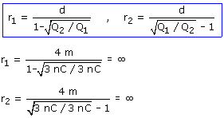

d) El campo se anulará en un punto, situado en la línea que une las cargas y en la zona exterior. Como las cargas son de igual magnitud el punto tendrá que estar a la misma distancia de ambas cargas y eso es imposible estando en la zona exterior a las cargas. El campo no se anulará en ningún punto Despreciando lo antedicho nos vamos a empeñar en calcular donde se anula el campo. Supongamos que el campo se anula en un punto A en la zona exterior derecha:

|